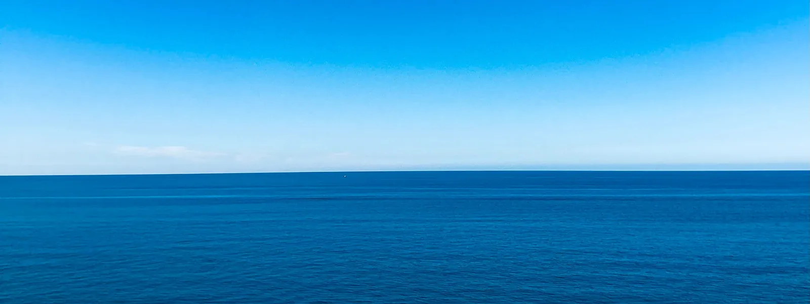

The idea
Most of safety is decided before departure
Running a yacht asks a lot of a few people. The information they need lives in separate places: instruments, maintenance records, charts, forecasts, AIS and the crew’s own knowledge. Each tool does one job well; none asks what it all means for this crew, today.
Marilosa brings it together, before departure, underway and after arrival, and leaves every decision with the captain.

3 in 4
recreational boating deaths were drownings
Most
drowning victims were not wearing a life jacket
~70%
of deaths occurred where the operator had no boating instruction
US Coast Guard, Recreational Boating Statistics 2024. Preparation can change these factors.